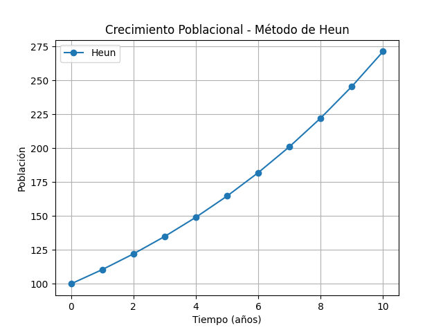
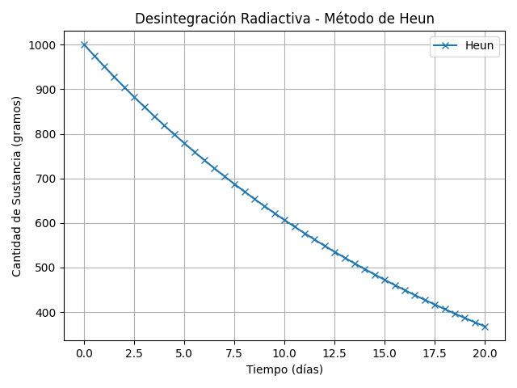

Método de Heun: Aplicaciones y Ejemplos
Aquí se presentan los mismos 3 ejemplos del mundo real, esta vez para ser resueltos usando el Método de Heun (Euler Mejorado). Incluya los datos de entrada, formularios para la ecuación, y una indicación para las gráficas generadas con Python.
Ejemplo 1: Crecimiento Poblacional (Modelo de Malthus)
Descripción: Este modelo simple describe el crecimiento de una población donde la tasa de crecimiento es proporcional a la población actual. Se asume un suministro ilimitado de recursos.
Ecuación Diferencial: $ \frac{dP}{dt} = kP $
Datos de Entrada:
- Población inicial ($P_0$): 100 individuos
- Tasa de crecimiento ($k$): 0.1 por año
- Tiempo inicial ($t_0$): 0 años
- Tiempo final ($t_f$): 10 años
- Tamaño de paso ($h$): 1 año
Formulario para la Ecuación:
Resultados:
Gráfica (Generada con Python):
Ejemplo 2: Desintegración Radiactiva
Descripción: La desintegración radiactiva es un proceso en el que un núcleo atómico inestable pierde energía emitiendo radiación. La tasa de desintegración es proporcional a la cantidad de sustancia radiactiva presente.
Ecuación Diferencial: $ \frac{dN}{dt} = -\lambda N $
Datos de Entrada:
- Cantidad inicial de sustancia ($N_0$): 1000 gramos
- Constante de desintegración ($\lambda$): 0.05 por día
- Tiempo inicial ($t_0$): 0 días
- Tiempo final ($t_f$): 20 días
- Tamaño de paso ($h$): 0.5 días
Formulario para la Ecuación:
Resultados:
Gráfica (Generada con Python):
Ejemplo 3: Enfriamiento de Newton
Descripción: La ley de enfriamiento de Newton establece que la tasa de pérdida de calor de un cuerpo es proporcional a la diferencia de temperatura entre el cuerpo y su entorno.
Ecuación Diferencial: $ \frac{dT}{dt} = -k(T - T_a) $
Datos de Entrada:
- Temperatura inicial del objeto ($T_0$): 100 °C
- Temperatura ambiente ($T_a$): 20 °C
- Constante de enfriamiento ($k$): 0.07 por minuto
- Tiempo inicial ($t_0$): 0 minutos
- Tiempo final ($t_f$): 60 minutos
- Tamaño de paso ($h$): 2 minutos